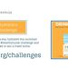

De un an deja nu schimb bateria în tonometru!
Bună ziua!
Cu un an în urmă, am fost hipotensivă și am rezistat stoic la toate simptomele acestei boli împieliţate. Greață bruscă, slăbiciune constantă, amețeli și dorința constantă de a se culca – și în felul acesta petreceam ultimii 30 de ani.
Acum am 58 de ani. Timp de un an, nu schimb bateria în tonometru, pentru că am găsit cum să câștig această boală și să respir adânc în cele din urmă.

Jumătate din viața cu tensiune arterială scăzută
În tinerețe, toate bolile sunt mai ușor de tolerat și atitudinea față de ele este neglijentă. Așa că nu am fost îngrijorată până la timpul anumit.
Odată cu vârsta, am început să reacționez puternic la schimbările meteo. Odată cu ploaie sau cu soare mă culc, nu mă pot ridica din pat. Apoi am început să am amețeli, și așa de puternici că nu puteam să mă ridic sau să ies din casă.
E bine dacă s-a întâmplat asta acasă, dar dacă undeva în public, atunci toată lumea s-a ferit de mine, parcă am fost beată sau chiar am prezentat un pericol. Au fost puține cazuri, dar în cap au fost depuse clar.
Greața a fost adăugată la amețeli, iar cu ea și slăbiciunea. Zece ore de somn pe noapte – nu este bine? Și uneori nu mi-a fost suficient. Mereu m-am simțit ca o lămâie stoarsă.

Tratament
Nu m-am dus la medici cu problema mea până în ultimul moment. Când simptomele s-au înrăutățit și au început să interfereze serios cu viața normală, m-am dus la doctor. Nu mi-au spus nimic explicit, care este ceva obişnuit în medicina noastră. "Cu un astfel de diagnostic, jumătate din țară trăiește și nu se plânge", – cu aceste cuvinte, medicul m-a trimis pentru medicamente.
Am luat totul după prescripție și am început să administrez așa cum mi-a spus medicul. Au trecut o săptămână, două, trei, dar nu am devenit mai bine. De îndată ce vremea se schimbă, așa că mă întorc la culcare. Și bine, dacă m-aș putea descurca într-un fel, dar nu am putut lucra, a trebuit să cer o vacanță pe cheltuiala proprie.
Eram pe punctul de pensionare. Mi-am dat seama că, cu o astfel de sănătate, nimeni nu-mi pasă, dar îmi place să muncesc. Am decis cu orice preţ să găsesc un mod de a îmbunătăți sănătatea. Și l-am găsit!

Ajustarea tensiunii arteriale
În funcție de vârstă, ar trebui să știu deja totul despre tratamentul alternativ, dar în afară de cafea, nimic altceva nu mi-a venit în minte pentru a trata hipotensiunea. Și aici am găsit o brățară pentru ajustarea tensiunii arteriale АВР-051. Am găsit-o accidental pe internet – foarte interesantă mi s-a părut invenția – și am început să învăț cum funcționează acest dispozitiv.

Iată ce am reușit să găsesc pe internet.
АВР-051 este un aparat care tonifică vasele înguste ale hipotensivi cu ajutorul semnalelor electrice.
Aproape că nu le simțim, dar ele salvează corpul de diferite afecțiuni. În acest caz, aparatul nu încarcă inima (așa cum se întâmplă în cazul pastilelor) și are un efect pozitiv asupra sănătății în general. Terapia cu curent ajută bine la
- - dureri de cap, migrenă;
- - oboseală cronică;
- - somn perturbat;
- - nervozitate, iritabilitate;
- - tahicardie;
- - boli cardiovasculare.
Tratamentul de curs cu АВР-051 dă o creștere a puterii, ameliorează dureri de cap, aliniază tensiunea arterială și, de fapt, ameliorează hipotensiunea.

A apărut o speranță de a scăpa definitiv de simptomele cu care eu trăiam de atâția ani. Mi-am comandat aparatul și, de îndată ce am primit, am început tratamentul.
S-a dovedit că brățara trebuie utilizată de trei ori pe zi timp de 6 minute. Nu-ți pierde timpul, dar ce efect dă!
Din primele zile de tratament cu acest stabilizator, m-am simțit mai bine. A apărut o energie, capul a devenit clar, starea de spirit este bună. Cel mai surprins a fost faptul că am început să mă trezesc mai devreme decât ceasul meu cu alarmă sună – aceasta nu este tipic pentru mine. Și cel mai important, că m-am simțit bine!
În curând am încetat să mă mai recunosc. Energia a devenit atât de mult încât pur și simplu a trebuit să fie transformată în ceva util. M-am înscris la piscină, am început să înot în seri, iar în week-end mă duc la fiica mea în orașul vecin, cu nepoții îi ajut.
Nu pot spune ce sunt fericită: atât de mulți ani să am totul sub control, să aștept necazurile în vreme rea și să expir adânc într-o jumătate de lună, să mă simt complet relaxată. Parcă am devenit tânără din nou!

Unde puteți obține dispozitivul pentru hipotensiune
Conform instrucțiunilor, cursul de tratament este doar de două săptămâni. Pentru a menține sănătate, este recomandat să repetați cursurile o dată la 4-6 luni. Totuși, suntem supuși activităţilor fizice și poverilor morale în fiecare zi, suntem stresați și nu întotdeauna mâncăm perfect.
De aceea, în trusa de prim ajutor acasă, stabilizatorul este o chestie indispensabilă. Poate fi folosit de la caz la caz (când capul te doare, de exemplu) și pentru a trata o serie de alte boli.
Despre ce alte boli tratează acest aparat, puteți citi pe site-ul producătorului. Tot acolo, puteți comanda acest aparat magic. Până la acționează promoția – stabilizatorul de tensiune poate fi comandat cu o reducere.
Fiți sănătoși și aveți grijă de dvs!
Accesați site-ul producătorului pentru a primi stabilizatorul de tensiune


-

Healthy Story
Comunitate
523 de membri
8 Postări noi astăzi -

Healthy Nurse, Healthy Nation
Comunitate
15K de membri
8 Postări noi astăzi -

HEALTHY LIVING
Comunitate
9.3K de membri
10 Postări noi astăzi -

Healthy Nervous System Revolution
Comunitate
21K de membri
4 Postări noi astăzi -

Happy Healthy 24/7
Comunitate
3.2K de membri
10 Postări noi astăzi
Monica Sochircă
Autorule, vă înțeleg foarte bine. Tensiunea arterială scăzută mă chinuie toată viața. Avem mai multe generații de hipotensivi din partea mamei mele. Este bine că acum există cel puțin câteva modalități de a ridica tensiunea iar, înainte, a fost foarte dificil cu asta...
Cornel Năstase
E ciudat, un fel de dispozitiv de pe mâna poate regla tensiunea arterială. Cum funcționează?
Marcel Buruiană
Așa și funcționează. Dispozitivul trimite impulsuri la încheietura mâinii și normalizează tonul vaselor, totul este simplu! Principalul lucru este să nu confundați programul, altfel efectul nu va fi.
Albert Puhoi
Amețeli constante, dureri și pierderi de energie. Am decis să încerc stabilizatorul. De îndată ce am pus pe mână, am simțit imediat o ușurare. Într-o săptămână și jumătate, tensiunea este ca la o persoană sănătoasă. E convenabil, îl iau cu mine la serviciu.
Luminița
Mult timp în urmă am vrut să cumpăr ceva de genul asta, am auzit multe despre un astfel de dispozitiv, dar nu am putut găsi în magazin.
Alexandru Plămădeală
Treceți la site-ul oficial, acolo există toate informațiile despre acest dispozitiv
Gheorghe Tamciuc
Oameni buni, spuneți-mi dacă dispozitivul ajută cu adevărat la combaterea hipertensiunii arteriale??
Grigore Cristea
De un milion de ori a fost pusă această întrebare, de un milion de ori a fost dat răspunsul. Desigur, ajută, jumătate din oraș îl poartă! Mai bine vizitați site-ul producătorului, totul este descris, cum funcționează și despre eficiența acestuia.
Victor Dombrovan
Convenabil, practic, noile tehnologii. Ține încărcătura destul de mult. Și cu ajustarea tensiunii arteriale, aparatul face față cu 5+. Am comandat pe site-ul oficial, a venit la oficiu poștal în 5 zile!
Beatricia
Nu-mi vine să cred! Mi s-a ridicat tensiunea, mi s-a luat ambulanța de câteva ori. Este inutil să lupți cu asta - așa m-am gândit până când АВР-051 a venit la oficiu poștal. Îl folosesc aproximativ 2 săptămâni, până când tensiunea nu s-a ridicat:)
Dorin Chirtoacă
I-am comandat tatălui meu, care suferă mereu de tensiune arterială scăzută. Nu-i dă drumul aparatului. Greața a dispărut, a început să arate mai puțin obosit și a uitat de amețeli. Cu ajustarea tensiunii scăzute, dispozitivul se descurcă cu siguranță!
Bogdan Guțu
Am comandat, produsul a venit în 6 zile. Pentru câteva zile de utilizare am doar o impresie bună despre aparat până acum. Cel puțin a dispărut tinitus și a încetat să se întunece în ochi. Vă recomand să cumpărați acest dispozitiv!
Diana Zingan
E un dispozitiv interesant. Am visat la un astfel de dispozitiv de mult timp, prețul este accesibil, probabil ar trebui să-mi comand unul.
Sofia Bujor
I-am cumpărat soțului. După utilizarea dispozitivului a început să arate mult mai viu. Nu se mai plânge de furnicături în inimă, amețeli și oboseală.
Artemie Cojuhari
După părerea mea, înainte au încercat să lanseze ceva similar pe piață. Numai prețul a fost fabulos și au existat dezbateri constante despre eficacitatea acestuia. Încă nu am auzit nimic rău despre stabilizatorul de tensiune АВР-051.
Marian Lupu
O recenzie pentru cei care încă se îndoiesc de a cumpăra un astfel de dispozitiv minunat. I-am comandat mamei un astfel de dispozitiv. Tensiunea ei arterială creștea foarte des. A ținut o dietă, a încercat să fie mai mult în aer liber, chiar a încercat să facă niște exerciții fizice. N-are rost. Medicii îi prescriu pastile - de asemenea, nu au ajutat. Am monitorizat întregul Internet și, de îndată ce АВР-051 a apărut în vânzare, l-am cumpărat imediat. Ce miracol! Două săptămâni și n-a avut nici un simptom de tensiune crescută! Așa cum au promis producătorii!:)
Radu Vazdauțan
Nu am suferit prea mult de creșterea tensiunii arteriale. Am comandat din curiozitate. Am fost plăcut surprins că, după un timp, starea fizică și emoțională s-a îmbunătățit de multe ori. Stă confortabil pe mâna, e ușor de folosit. Cu siguranță merită banii săi!
Augustin Dobrea
Acest dispozitiv este atât de ușor de utilizat încât, în doar câteva minute, bunicul meu a dat seama unde să bage degetul pentru a ajusta tensiunea. Vom verifica eficiența sa cu timpul, folosim de câteva zile, până acum este dificil să spunem ceva.